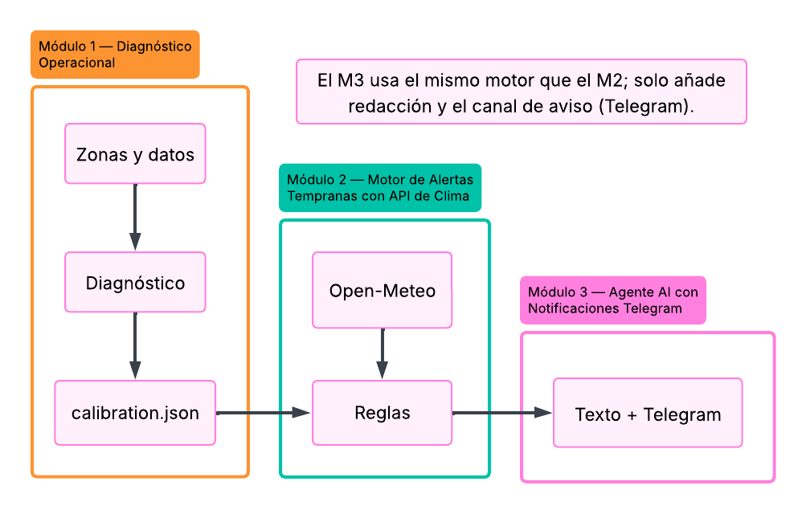

Delivery · Logística
Caso técnico Rappi — Sistema de alertas operacionales
Proyecto data-driven con tres módulos: diagnóstico operacional (ratios por zona y hora), motor de reglas con pronóstico Open-Meteo y debounce anti-fatiga, y agente Telegram con salida estructurada (RAG-lite). Stack: Python, n8n, Prometheus, Grafana y Django.